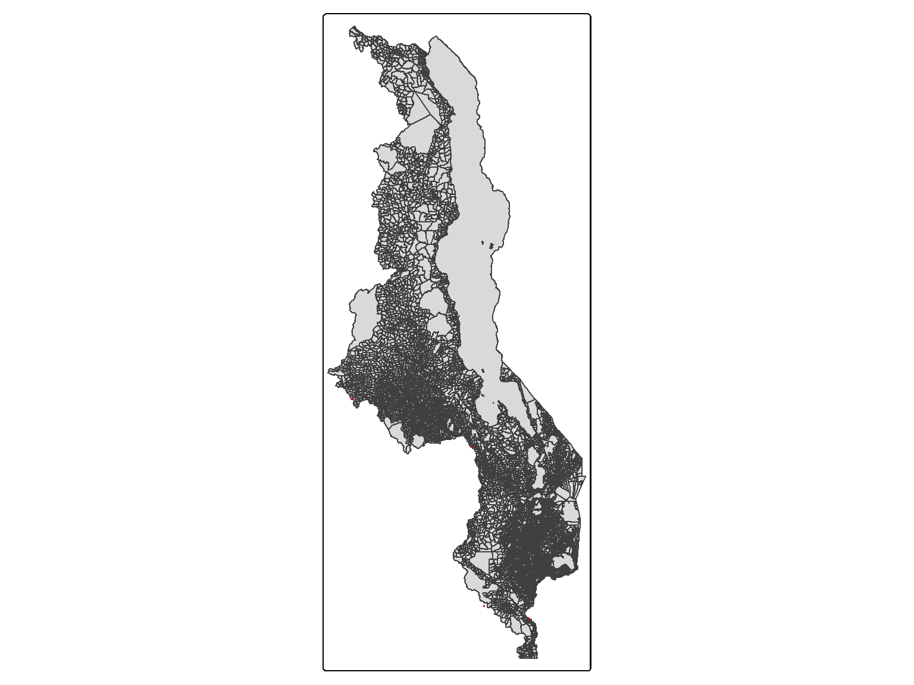
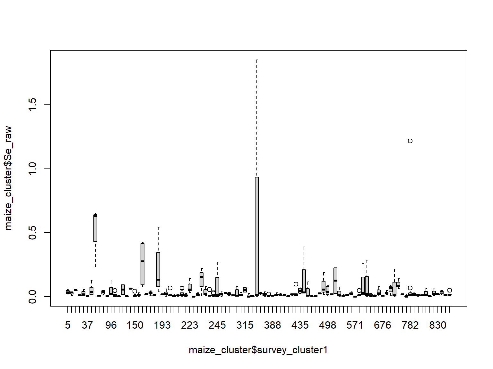
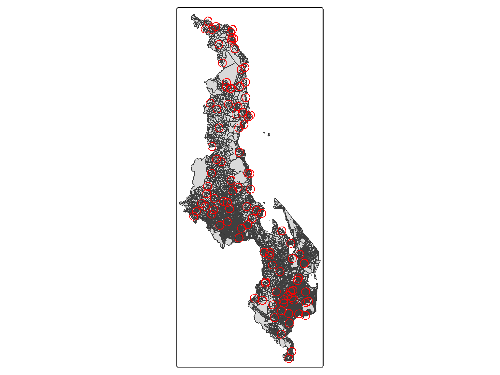
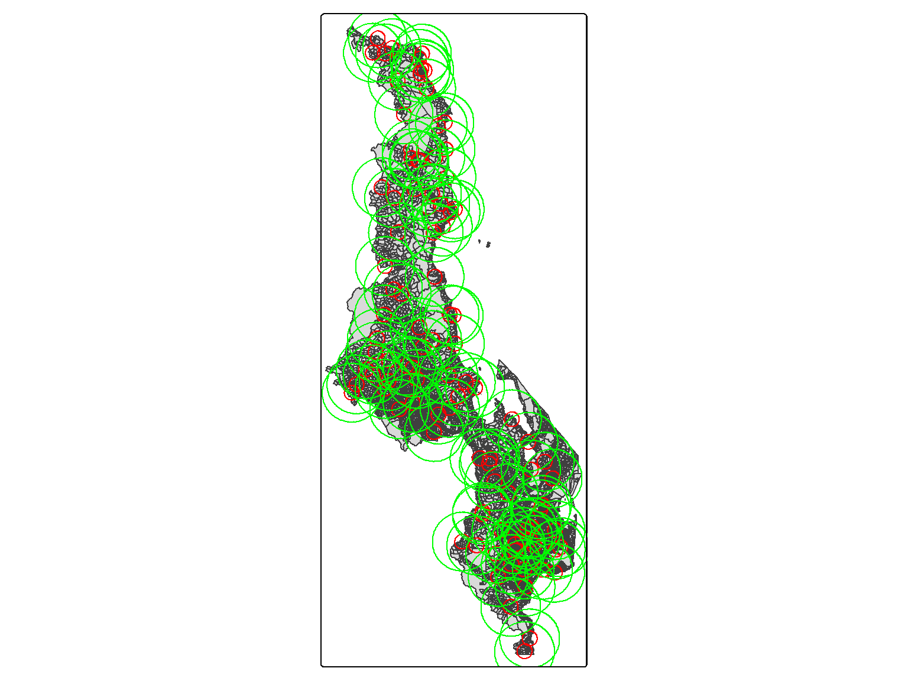

Once the datasets are selected and cleaned. The next steps are the preparation of the variables that are going to be used in the model. Particularly, generating the different estimates of maize grain Se concentration for each aggregation level that will be compared with the plasma Se concentration in Malawian women.
Code
# Loading packageslibrary(dplyr) # data wrangling library(stringr) # string data manipulation library(ggplot2) # data visualisationlibrary(sf) # spatial data manipulationlibrary(tmap) # spatial data visualisationlibrary(DT) # pretty & interactive tables# Loading data# Admin Boundaries for Malawi: EAsea_bnd <-st_read(here::here("data", "mwi-boundaries", "EN_NSO" , "eas_bnd.shp"), quiet =TRUE)# Reading the EA shapefile w/ updated districts (See 00_cleaning-boundaries.R)ea_admin <-st_read(here::here( "data", "inter-output", "boundaries", "mwi_admbnda_adm4_nso.shp"), quiet =TRUE)# Changing variable region class to factorea_admin$region <-as.factor(ea_admin$region)# Districtsdist_bnd <-st_read(here::here( "data","mwi-boundaries","mwi_adm_nso_hotosm_20230329_shp", "mwi_admbnda_adm2_nso_hotosm_20230329.shp"), quiet =TRUE)dist_bnd <-st_make_valid(dist_bnd) # Check this# Maize Se conc.(from cleaned from 00_cleaning-maize.R)maize.df<-readRDS(here::here("data", "inter-output", "mwi-grain-se_raw.RDS")) %>%## Getting only entries with maize Se valuesfilter(!is.na(Se_raw) & Crop =="Maize")# Plasma Se conc. (cleaned from 00_cleaning-dhs.R)plasma.df <-readRDS(here::here("data", "inter-output","dhs_se_gps.rds")) %>%# removing entries with missing values in plasma Se conc.filter(!is.na(selenium))# Cluster data (cleaned from 00_cleaning-location.R)cluster.df <-readRDS(here::here("data", "inter-output", "aggregation", "master-cluster-admin-level.RDS"))
The datasets that we used are listed below:
ea_admin: This (shape)file contains the boundaries of Malawi smallest administrative units, Enumeration Areas (EAs), and information on their corresponding districts and regions. This dataset was generated in the 00_cleaning-boundaries.R. For more information regarding the dataset see the Chapter 3. Note that the boundaries of the lakes (e.g., Lake Malawi) were excluded as maize grain nor plasma Se could have been taken within those boundaries.
maize.df: This file contains the GPS sample location (lat/lon), maize grain Se concentration, soil pH and Mean Annual Temperature (MAT). See Chapter 4 for more information on the dataset.
plasma.df: This file contains the displaced cluster location (lon/lat), plasma Se concentration, and other individual level information (wealth quintile, BMI, etc.). See Section 2.1 for more information on the dataset.
predmaize.df: This file contains the coordinates of Malawi (lat/lon), the predicted maize Se concentration for Malawi and their covariance (uncertainty associated to each prediction). The data was derived from the maize.df dataset using ordinary kriging and the scripts can be found in 01_maize-model.R and are based on the study of Gashu and colleagues (2022).
6.1 Maize aggregation using observed maize dataset
6.1.1 Cluster-level mean of the observed maize Se
6.1.1.1 Identifying enumeration areas of the maize grain sample locations
Similarly, in the maize grain Se dataset, the EAs were not available for each sample point. Therefore, in order to calculate the mean/media maize Se concentration for each administrative unit, we need to link the dataset with the administrative boundaries of Malawi (ea_admin) with the maize grain Se dataset (maize.df).
Here, we could, as first step, identify the EAs where each maize grain were sampled. This could be easily done for the observed dataset as the number of samples are still small. On the other hand, for the predicted maize grain Se dataset, this spatial joint may take very long. Therefore, because the objective is to provide maize grain Se values for the aggregation units with plasma Se values, we could use the cluster-EAs, the districts, and the buffered areas.
To do so, we used the spatial join, as it was done for the plasma.df.
Code
# Checking the class of the two datasetsclass(ea_admin)
[1] "sf" "data.frame"
Code
class(maize.df)
[1] "data.frame"
We can see that the maize grain dataset is not a spatial object. Therefore, we need to be transformed into one, which will be now be the geomaize.df.
Code
# Transforming maize data.frame into a spatial object (geometry) geomaize.df <-st_as_sf(maize.df,coords =c("Longitude", "Latitude"), crs ="EPSG:4326")# Adding a variable to store info on distance geomaize.df$dist_in_m <-NA# Checking effect of the transformationclass(geomaize.df)
[1] "sf" "data.frame"
After checking that the geomaize.df is the correct class. We can proceed to merging the two spatial datasets.
Code
# Getting info on the admin boundaries (EA/district level)# Allocating Se values to each admin unitgeomaize_ea.df <-st_join(geomaize.df, ea_admin)
There were some maize grain samples (n=5) without a corresponding EA. This was because some of the GPS location were incorrect/inaccurate (i.e., one sample location lied outside Malawi boundaries), or due to lying in outside boundaries as it is shown in the map below by the red dots (Figure 6.1).
Code
# Storing data of the maize Se samples w/o EAsmissing <- geomaize_ea.df[which(is.na(geomaize_ea.df$EACODE)),]# Plotting maize Se sample falling out EAstm_shape(ea_bnd) +tm_polygons() +tm_shape(missing) +tm_symbols(col ="red", size =0.1)

Figure 6.1: Map of Malawi divided by Enumeration Areas (EAs) and the red points representing the maize grain Se samples outside EA boundaries.
Instead of removing the observations, we decided to allocated them to the closest EA (in m). The information on how far (in m) were from the EA that were allocated to, was also stored in the new variable that was generated in previous steps: dist_in_m.
Code
# Fixing missing (EAs for maize Se values) m <-c(90, 200, 300, 4500)for(i in1:length(m)){geomaize_ea.df[which(is.na(geomaize_ea.df$EACODE)), "dist_in_m"] <- m[i]geomaize_ea.df[which(is.na(geomaize_ea.df$EACODE)),] <-st_join(geomaize_ea.df[which(is.na(geomaize_ea.df$EACODE)),1:ncol(geomaize.df)-1], ea_admin, st_is_within_distance, dist = units::set_units(m[i], "m")) }
Finally, the maize grain dataset was ready for calculating the mean/median Se concentration at the different administrative boundaries and was stored into as intermediary output for further analysis. Before saving the dataset, it was transformed back into a data frame by removing the geometry and adding back the information about the samples locations as coordinates (longitude and latitude).
Code
# Converting back from spatial obj to dataframemaize.df <- geomaize_ea.df %>%st_drop_geometry() %>%#removing geometryright_join(., maize.df) # adding back the long/lat variable
Code
# Saving dataset with aggregation unit for modelling saveRDS(maize.df, here::here("data", "inter-output","mwi_maize-se-raw_admin.RDS"))
After the dataset are prepared and the spatial aggregation level datasets are ready, we can proceed to calculate the aggregation of maize grain Se at the different aggregation levels. Those were calculated using the script (01_maize-aggregation.R) and are described in subsequent sections.
6.1.1.2 Aggregation of the data
First, we are getting the cluster-EA information for which we would need the maize Se concentration.
We have already identified in which EAs the observed maize dataset are in in the Section 6.1.1.1, as shown in the ?fig-map3. Therefore, we only need to merge the two dataset, and get the maize Se concentration for each EA within each cluster.
Code
# Merge cluster's EA and observed maizemaize_cluster <- maize.df %>%right_join(., cluster.df) # Visualising the maize Se conc. per clusterboxplot(maize_cluster$Se_raw ~ maize_cluster$survey_cluster1)

In the boxplot, we can see that the variability of maize grain Se concentration is quite different for each cluster, which may lead to some high intra-cluster variability.
Then, we calculated the mean, median, standard deviation (SD) and interquartile range (IQR) of the maize Se concentration for each cluster.
We can see that there were 4 clusters without any maize Se concentration, this is because there were no samples collected for any of the EAs within that clusters. We identified the clusters without any observed maize Se concentration value.
Code
# Getting the cluster with missing values miss <-unique(maize_cluster$survey_cluster1[is.na(maize_cluster$Se_mean)])
6.1.1.3 Missing values
We need at least one maize Se value per cluster to be compared with the plasma Se. However, there were four clusters (200, 276, 497, 777) from the plasma Se dataset (plasma.df) that did not match with any of the EAs in the observed Se maize grain dataset (maize.df). Hence, the approach taken was the following:
Code
# Selecting only the EAs that were included in the missing clusters ea_cluster <- cluster.df %>%filter(survey_cluster1 %in% miss) %>%distinct(EACODE) %>%left_join(., ea_admin) %>%st_as_sf()
Firstly, we identified the EAs that were included in each of the missing clusters (n=1.0402005^{7}, 1.0402006^{7}, 1.0406001^{7}, 1.0406002^{7}, 2.0652013^{7}, 2.0666005^{7}, 2.0631007^{7}, 2.0631008^{7}, 2.0666004^{7}, 2.065201^{7}, 2.0652012^{7}, 2.0666002^{7}, 2.0666006^{7}, 2.0631002^{7}, 2.0638018^{7}, 2.0666009^{7}, 2.0667001^{7}, 2.0633003^{7}, 2.0631003^{7}, 2.0631004^{7}, 2.0631005^{7}, 2.0675001^{7}, 2.0631006^{7}, 2.0652009^{7}, 2.0666003^{7}, 2.0666001^{7}, 2.0666007^{7}, 2.0611021^{7}, 2.0666008^{7}, 2.0612001^{7}, 3.0806042^{7}, 3.0806041^{7}, 3.0806023^{7}, 3.0403027^{7}, 3.0806029^{7}, 3.080603^{7}, 3.0403028^{7}, 3.0806031^{7}, 3.0806032^{7}, 3.0403043^{7}, 3.0806036^{7}, 3.0403062^{7}, 3.0806035^{7}, 3.0806033^{7}, 3.0403063^{7}, 3.0806034^{7}, 3.0403065^{7}, 3.0806039^{7}, 3.080604^{7}, 3.0403066^{7}, 3.0403067^{7}, 3.1106001^{7}, 3.1001092^{7}, 3.1106003^{7}, 3.1001093^{7}, 3.1106002^{7}, 3.1001094^{7}, 3.1106006^{7}, 3.1001095^{7}, 3.1106007^{7}, 3.1106009^{7}, 3.1106005^{7}, 3.1001098^{7}, 3.110601^{7}, 3.1106008^{7}, 3.1106011^{7}).
Secondly, we assigned the closest data point (i.e, maize grain Se conc. value) for each EA. To do so, we created a loop that finds the closest data point 20m increment each time for all the EAs and it store the distance for future reference.
Code
for(i in1:nrow(ea_cluster)){ m <-230if(sum(ls()=="missing")==0){ missing <- test } missing <-rbind(missing, test)print(nrow(missing))repeat {m <- m +20 test <-st_join(geomaize.df, ea_cluster[i,], st_is_within_distance, dist = units::set_units(m, "m")) %>%filter(!is.na(EACODE))%>%mutate(dist_in_m = m)print(i)print(m)if(nrow(test)>0) { break} }}# Saving output of the loopmissing %>%st_drop_geometry() %>%saveRDS(., here::here("data", "inter-output", "filling-missing-Se-observed-maize.RDS"))
Note that we are starting at 230m distance because we found th first match at 250m.
At least one maize Se concentration value was found per each EA, however we only need, at least, one value per cluster and hence, a number of possibilities of dealing with the multiple matches were considered, and are described below.
Firstly, we considered using the mean/ median of all EA values per cluster, however there were many repeated values. For instance, the closest data point for 11 (out of 15) EAs within the cluster 200 were the same maize sample (Se= 0.344mcg/kg) as it is shown in Figure 6.2. Hence, we decided to exclude duplicated samples to keep consistency with the whole sample.
We decided to use the closest location with reference to the cluster because for this analysis the aggregation unit, and hence the reference point are the clusters. If we would allocate one value per EA (as for the other approaches) we should do the same for the whole sample, as mentioned above. As currently, we have only picked those EAs with observed values given that at least one value was available per EA, and trying, when possible, to avoid duplicated observed values.
Some checks were performed to ensure that maize Se samples values were not duplicated.
6.1.1.4 Limitations of the co-location at cluster-level
There were only five clusters where the closest samples and the cluster-EAs were not co-located (i.e., within the EA boundaries), as described in th previous section. Four of which were represented by only one sample point and most of them were at close distance and below the displacement distance (less than 2.5km). With the exception of Lilongwe city (cluster 777), for which the value of maize grain Se concentration used may not be representative due to a number of issue:
Related to the distance of the nearest sampling site: It was the longest distance between the cluster-EAs and the nearest maize sampling site. The distance was almost double the displacement for urban areas (2.5km vs 4.3km). This may be explained by the lack of agricultural fields (to grow maize) inside the city which was also confirm by local experts. According to personal communication with a local expert (G.O), the acquisition dynamics in the city are quite diverse, with people in the highest quintiles buying maize from supermarkets and/or bringing it from their hometowns, whereas those from middle and lowest quintiles may buy the maize in local market, local millers and/or own production, harvested from their family villages. There will be small family trades like bringing sugar and oil from the city to the home village and taking maize flour, particularly during harvest season. In addition, some climatic events that may affect crops and maize stocks (i.e., reduced stocks) in the lean season which in turn may affect the origin of the maize. For instance, this year (2023/2024) some of the maize distributed from aids (i.e., WFP) has been grown in Tanzania. Definitely more insights in local trades, and city food acquisition will be needed.
Related to the number of samples: In part, due to the distance to the nearest sample locations, we only have one maize grain Se concentration value for whole city, in addition, only one cluster was included in “Lilongwe city” as such, and hence the variation and representation it may be further hampered.
6.1.2 District-level observed maize Se
All districts have sampled locations of the observed maize grain Se concentration. Hence, a number of approaches could have been taken to aggregate the observed maize values. For instance, in order to use the same values for both aggregation units, we could have used the dataset developed in the previous steps and using the EAs to identify which sampled points laid within each district. However, because values for 4 clusters were manually added by closest proximity, we will probably include duplicated values, unless we have exclude the samples where the distnace to the closest location was higher than 0m (indicating that sample was not within the EAs boundaries), and leading then to disparities between the cluster-level and district-level datasets. Hence, we decided to use the same approach as in the previous step, and spatially joint the districts boundaries and the geomaize.df.
We can see that, of the n=32, one district is missing: Likoma which we have no maize sample, but also no plasma samples were collected.
One thing is striking is that there are more maize samples per district when using the EA as opposed to the district boundaries, this is because of the duplication of values due to closest sample points. Despite that when plotting the two district-level datasets against each other, values were in agreement and closely aligned.
TODO: Review further the sourve of disagreement between the number of samples by the two methods
6.1.3 Buffer areas
All the aggregations for each buffer were performed using a loop, as we already identified that all buffers have at least one sampled value and the structure of the datasets were equal.
6.2 Maize aggregation using predicted maize dataset
The predicted maize had values for all the surface in Malawi, hence, no issues of missing values were found.
The process was the same as the observed, and it was done as described in previous sections.
6.2.1 Buffer areas
In order to improve the reproducibility, code readability and transparency of the final model, we generated a function to obtain the buffers: buffer_generator().
The function takes as inputs the spatial dataset with the point location of the centroids and the ids of each centroid, in our case the cluster id, and the minimum and maximum buffer size and the increments in which should be generated.
The parameter were chosen as follow:
min: 10km buffer to be in line with the maximum displacement possible.
max: 60km based on the maximum district area.
increments: 10km based on the lag-bin chosen in the OK estimations.
The shapefiles generated for each buffer are stored in the folder. Then the folder was manually moved into the boundaries folder. This was needed because the st_write() can’t deal with long names. See GitHub issue.
Code
# Path to store the buffer generated belowfolder <- here::here( "buffer")# Function to generate buffers# smallest = 10km, biggest = 60km, increments = 10buffer_generator(geogps, 10, 60, 10, folder)
Here, in Figure 6.4 we can see the smallest buffer at 10km, followed by the maximum buffer at 60km.
Code
# Obtaining the distances for each buffer generated abovebuff.dist <-na.omit(unique(stringr::str_extract(list.files(here::here("data", "inter-output", "boundaries", "buffer")),"[:digit:]{2}")))# Getting the smallest buffer from the buff.disti =1# Saving it for the mapbuffer_min <-st_read(here::here("data", "inter-output","boundaries", "buffer",paste0("mwi_buffer",buff.dist[i], ".shp")), quiet =TRUE) # Plotting the maptm_shape(ea_admin) +tm_polygons() +tm_shape(buffer_min)+tm_borders(col ="red")

Figure 6.4: Map of Malawi with the red circles representing the smallest buffer (10km).
Code
# Getting the largest buffer from the buff.disti =6# Saving it for the mapbuffer_max <-st_read(here::here("data", "inter-output","boundaries", "buffer",paste0("mwi_buffer",buff.dist[i],".shp")), quiet =TRUE) # Plotting the map with the smallest and the largest bufferstm_shape(ea_admin) +tm_polygons() +tm_shape(buffer_min) +tm_borders(col ="red") +tm_shape(buffer_max)+tm_borders(col ="green")

Figure 6.5: Map of Malawi with the red circles representing the smallest buffer (10km) and the green circles representing the largest buffers (60km).
Code
# Getting the smallest buffer from the buff.disttm_shape(ea_admin) +tm_polygons() +tm_shape(buffer_min)+tm_borders(col ="red") # Plotting the map with the smallest and the largest bufferstm_shape(ea_admin) +tm_polygons() +tm_shape(buffer_min)+tm_borders(col ="red") +tm_shape(buffer_max)+tm_borders(col ="green")
Figure 6.6: Map of Malawi with the red circles representing the smallest buffer (10km).
Figure 6.7: Map of Malawi with the red circles representing the smallest buffer (10km) and the green circles representing the largest buffers (60km).
6.3 Joining datasets
The final step to get the dataset ready for modelling is to join the plasma.df dataset with the different values of maize Se for each of the aggregation level. That was perfomed in the script `` and it yielded 10 datasets: 5 aggregation levels (cluster, district, 15km, 25km and 30km buffer) x 2 maize Se values (observed, predicted).
6.4 Limitation of the data aggregation
The “co-location” issues were only problematic at the smallest area tested (e.g., cluster level) and for observed mean/median (that calculated using only the original sampled values). Hence, the concern when comparing with the predicted values will be:
What are we really measuring/ comparing?
Additionally, it is important that we think about the displacement of the household location and the potential impacts on the final results. For instance, when two households are in the same EA, the maize Se value is the same for both households.
See sensitivity analysis.
Some test were performed to check the influence of some of the decision/assumptions made during the data preparation and processing.
6.4.1 Testing assumptions
6.4.1.1 Sensitivity analysis
We compared the predicted mean/ median with the observed values of the same EA only. To see if the results of our analysis are actually measuring methodological differences (i.e., between normal aggregated mean and predicted mean), or on the contrary, the difference in spatial variation in maize Se values (i.e., there is a difference between choosing the nearest EAs and peaking the “actual” EAs).
6.4.1.2 Household location
The coordinates for the HHs are only provided at cluster level (EAs). Hence, we need to check first the variability within cluster.
When we checked the variability of Plasma Se by clusters (See ?fig-4), we have realised two key things:
In general, we could assume that there is “low” cluster variability in the Plasma Se.
There is high variability within regions, driven mainly by three clusters. As we can see by the scale of the plots in ?fig-4, in northern region the scale ranged from 50-150ng/mL, in central region from 0-300ng/mL, with the highest values for clusters within Salima district (as expected), and the southern region ranged from 50-250ng/mL.
6.4.1.3 The variability of maize Se values by clusters
Similar trends were found for the individual clusters (Fig.1a-c), maize Se concentration values were comparable for all the aggregation levels with higher variability for specific clusters, particularly, where maize Se concentration was greater, as it can be seen for most of the clusters in the Northern district of Karonga (830, 507, 459, 388, 361, 309, 178), and in Salima (825, 209, 192, 170), or Ndanje (58, 200, 16) in the Central and Southern region, respectively. In the latter two regions, the largest values of maize Se concentration were found, as shown in Fig. 2, which corresponded to largest values in plasma Se concentration showing a comparable spatial pattern.
Code
## SM: Maize aggreg by cluster in paper-fig.R ----------------
Co-location: combining datasets by location
Samples, both maize and plasma, were supposed to be co-located (i.e., collected at the same EA) as per documentation on Gashu et al, (2021). However, when we checked the co-location of the two datasets: plasma Se values and the maize Se, based on the EAs where they were collected/ reported around 60% of our sample did not share the same EA. This was probably due to the EA displacement performed within the DHS protocol (see XX).
Hence, we decided to use the EAs where maize sample were collected (at the were not displaced), and to co-locate (by closest distance possible) the EAs within the buffer area displaced (2km and 5km for urban and rural respectively).
Even when doing that, there were still two clusters (group of EAs) that did not have any maize grain Se value co-location. For those clusters, the closest EA (xx m) with maize grain Se values were used.
Displaced location EAs
We studied the distance between EA (based on the displaced GPS location) with plasma Se values, and the maize Se EAs. To do so, we added the distance (in m) at which the co-location was found, when we studied the distance for rural clusters, we can see that only one cluster, corresponding to n=8 WRA reported location, were within higher distance (>5km) of the displacement. This corresponded to 1.23% of the sample of rural household which is below the reported, 10% displacement of 10km.
Most probable EA
Following the guidelines on the use of DHS GPS data, (Perez-Heydrich et al. (2013)), we assumed the missclassification potential, then we tested:
identify the most probable EA
compared that with the results above, i.e., with EAs were the same and which one were different
checked for those most probable which one had maize Se conc. and which one not
The list of the EAs where the WRA potentially lived was obtained in the scripts (00_cleaning-locations.R), and it was used to generate the centroids and buffers for further modelling in the 00_cleaning-boundaries.R.
Perez-Heydrich, Carolina, Joshua L Warren, Clara R Burgert, and Michael Emch. 2013. Guidelines on the Use of DHS GPS Data. ICF International. https://dhsprogram.com/pubs/pdf/SAR8/SAR8.pdf.